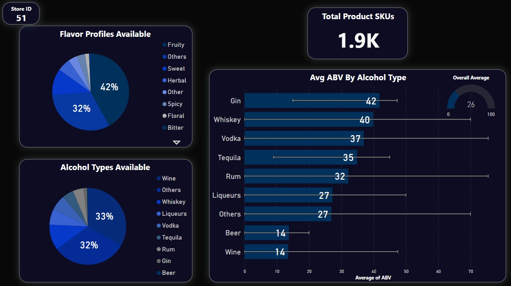

Introduction
Data Collection & Preparation
Data Exploration (EDA)
Clustering
ARM
Introduction
Have you ever experienced the frustration of finding your favourite product out of stock just when you're ready to make a purchase? Well, it's not just a letdown for you but also a significant loss for the retailers. In 2018, retailers lost out on $300 million in revenue due to poor inventory management, and that was before the pandemic. Pre-pandemic, the odds of shoppers seeing an out-of-stock message were 1 in 200. That figure rose to 1 in 59 in 2022, a 235% increase (source). In a survey, almost half of respondents (46%) indicated that overbuying inventory and buying the wrong type of products are top contributing factors to markdowns(source).
This results in dissatisfied customers, decreased profits, high holding costs, expired inventory, and inevitable write-offs. But, who bears the responsibility for this inventory mismanagement? Products don't magically appear on shelves, right? They go through a complex distribution process involving multiple middlemen. In a typical One Level Channel distribution, the retailer stands between the manufacturer and the customer, serving as the crucial link responsible for managing inventory to meet customer demand and maximize profit.

Yet, managing inventory is far from simple. It presents countless challenges, including poor demand forecasting, the impact of seasonality and trends, delays in purchasing, limitations in production capacity, delayed fulfilment, and more. Therefore, every retailer must implement a framework to optimize inventory management by identifying the ideal time for purchases to minimize overstocking or stockouts while maximizing revenue. The framework must be capable of answering the following questions:
- What product categories are in the highest demand?
- Which factors influence demand?
- What quantities of fast, slow and non-moving products are available in the inventory?
- What quantities of high and low profitable products are available in the inventory?
- What is the store’s average inventory replacement rate (or Inventory turnover rate), and how does it vary across product categories?
- Which vendors are reliable and have shorter fulfilment times?
- What is the fulfilment capacity of vendors?
- What are the associated purchase costs for each order?
- How level of demand can be expected in the upcoming days?
- Are there any emerging trends or consumer preferences that may impact future demand patterns?
Very few companies have achieved excellence in optimizing their inventory. For instance, Companies like Amazon, Walmart, and Coca-Cola have successfully implemented predictive analytics in their inventory management systems, resulting in significant cost savings and improved operational efficiency. Particularly, Amazon uses predictive analytics to manage its vast inventory effectively. By analyzing customer buying behaviour, Amazon can predict product demand with a high degree of accuracy and adjust its inventory levels accordingly. This has helped Amazon reduce its inventory holding costs and improve customer satisfaction (source).
In summary, effective inventory management is essential for retailers to remain competitive in today's dynamic marketplace. By embracing technological advancements and implementing robust inventory optimization strategies, retailers can minimize stock-related challenges, maximize profitability, and deliver superior value to customers.
Data Collection
This project requires a thorough level of data encompassing sales, product, inventory, and purchase details. Accordingly, the data was collected from 2 major sources:
Source 1: PWC’s Inventory Analysis Case Study Data files
PWC offers a combination of 6 datasets covering end-to-end product distribution operations of Bibitor LLC, a liquor store chain in the fictional state of Lincoln. It is a major retailer with approximately 80 locations and total sales more than $450 million within a single year. These datasets cover all transactions occurring between the retailer (Bibitor), vendors and customers throughout the year 2016.
Raw Data Overview:
- 1. Beginning & Ending Inventory (BegInvFINAL12312016.csv & EndInvFINAL12312016.csv):
- Description: Provides information of the products’ inventory availability at the beginning and end of the year across all stores.
- Data Granularity: InventoryId
- 2. Purchases (PurchasesFINAL12312016.csv):
- Description: Provides the complete purchase history of products by the retailer from various vendors, including fulfilment details.
- Data Granularity: Store + PONumber + Brand + ReceivingDate
- 3. Purchase Prices (2017PurchasePricesDec.csv):
- Description: Contains the purchase costs incurred by the retailer for each product
- Data Granularity: Brand (A combination of product SKU, vendor, and purchase price)
- 4. Vendor Invoices (VendorInvoices12312016.csv):
- Description: Presents details of the purchase invoices for every purchase order made.
- Data Granularity: POnumber
- 5. Sales (SalesFINAL12312016.csv):
- Description: Provides the sales history of products across all retail stores
- Data Granularity: Store + Brand + SalesDate
- Download the raw data here
Source 2: OpenAI API
Data obtained from Source 1 primarily centres on transactions but lacks essential product details. The Bibitor dataset comprises over 11,000 Liquor SKUs, yet only provides descriptions without further particulars. Understanding the drivers of product demand necessitates comprehensive product details. Therefore, the OpenAI API was used to gather the following information for each product:
- Alcohol Type: The category of alcohol, including options such as Wine, Vodka, Whiskey, Rum, Tequila, and more.
- Alcohol By Volume (ABV): The percentage of alcohol content in the beverage, typically ranging from 0% to 100%.
- Flavor Profile: The sensory characteristics of the drink, encompassing flavor such as Herbal, Sweet, Spicy, Floral, Sour, and others.
Download the raw data here
API Components:
Open API provides paid APIs to access their AI transformer models. For this project, the GPT model with the following components were used:
- 1. Endpoint: ChatCompletion
- 2. Parameters:
- Model: “gpt-3.5-turbo”
- Message: Input Query
Download the full API code here
Data Preparation
The collected raw data possessed the required granularity. However, it lacked structured, with tables containing redundant and overlapping information, as well as a few extraneous columns and unclean records. Hence, a new set of analytical base tables with a structured Entity Relationship has been designed.
Note: Hover through the ERD diagram to highlight relationships and read description.
These analytical tables are high-quality, clean datasets compiled from both sources and are ready for direct utilization in analytical tasks. Note that these datasets are non-aggregated tables that can be seamlessly combined as per requirements.
Data Preparation Steps:
- 1. Standardized “Size” column:
- Initially, the size column contained disparate units and noisy data. To rectify this, it was transformed into a uniform millimeter unit, following the removal of irrelevant noise.
- 2. Data extraction from OpenAI dataset:
- OpenAI responses were noisy with extraneous information. Hence, only the relevant information was extracted.
- 3. Generated unique product ID:
- In the absence of a designated ID for product SKUs in the raw dataset, the entire product information had to be replicated across all tables containing product data. To streamline this, SKU details from all raw tables were combined, and distinct IDs were created for each product SKU.
- 4. Formatted dates:
- All date entries were reformatted to the standard YYYY-MM-DD format.
- 5. Handled missing values:
- The OpenAI data contains a few missing records that were replaced with "Others" in "FlavorProfile" and "AlcoholType" column, and with Mean in "ABV".
- 6. Fixed data types
- All numeric ID columns were converted to object types.
- 7. Combined begin and ending inventory table
- Begining and endign inventory tables were merged to prevent redundancy.

- 8. Constructed dedicated info tables
- Built dedicated tables for product, vendor, and store details, aiming to minimize redundancy within other tables and decrease overall data size.
Download the data preprataion code here
Data Exploration
Find insights from the data that are crucial to optimize the inventory below:
1. Store, product, and vendors volume:
- Sales and purchase data cover the entire year of 2016.
- The dataset includes information from 80 stores, 132 vendors, 11K brands, and 11K products.
2. Sampling:
- For this project, the sample is taken as Store 51, which ranks close to median in the:
- Quantity sold (Rank 40)
- Total sales value (Rank 40)
- Number of unique products sold (53)
- Number of unique days sales occurred (Nearly every day)
3. Store ID 51’s sales and purchase summary:
- The store has purchased around 2K unique products from 73 vendors.
- Purchases and sales exceeded 300K products.
- Highest demand was observed in Q4 of 2016.
4. Which category of liquors dominated the store’s inventory?
-

- Fruity-flavored liquors and wine alcoholic types were prevalent in the inventory.
- Gin had the highest average level of alcohol volume, while Vodka had the highest ABV variance.
5. Which category of liquors had a higher price per product and was more profitable?
- Floral flavoured drinks were the most expensive (385% above overall average) and profitable (317% above overall average).
- Whiskeys were the most expensive (55% above overall average) and profitable (33% above overall average) alcoholic type.
6. Which category of liquors had higher demand and generated greater profits?
- Despite Floral flavour and Whiskeys having the highest margin per product, Fruity flavor and Wines generated more profit fuelled by their high demand.
7. Which category of liquors were purchased more from the vendors?
- To meet demand, Fruity flavor and Wines were the top choices for purchase.

8. How long does the vendors take to fulfil the order?
- Vendors typically take around 8 days to deliver the products, with some vendors managing delivery times as low as 4 days.
- The above visualizations were built using Microsoft Power BI
Clustering
Clustering is as an unsupervised learning method in machine learning, dividing data based on feature distances. Its goal is to group similar records within clusters (cohesion) while maintaining dissimilarity from objects in other clusters (separation). There are multiple ways to implement clustering however the most popular implementation includes K-Means and Hierarchical Clustering.
K-Means Clustering: This partitioning technique clusters data into a set number of clusters by aggregating the K closest points to a designated point. Various distance metrics (Euclidean, Manhattan, etc.) can be utilized based on the context.
Hierarchical Clustering: This method organizes data hierarchically, constructing dendrogram tree structures. Agglomerative clustering starts with the assumption that each point forms its own cluster, gradually merging them until ideally only one cluster remains. Similar to K-Means, diverse distance metrics and linkage methods are available, chosen according to the specific case.
For this application, both clustering and hierarchical clustering are applied in this scenario to categorize liquor items based on demand and profitability. This will aid in stock planning to maximize profit.
Data Preparation
Liquor information, its sales history and net profit data is required to implement and infer the clustering results. Hence, data clustering data was prepared by:
- Left joining Product_Info with Product_Purchase_Sale_Price tables and taking purchase and sales price from the right table to calculate profit_per_product.
- Right joining the resultant data with SalesHistory table to calculate demand per day.
Data Filter: The data was filter for store 51 and only sales data between quarter 1 to 3 were used, saving quarter 4 for testing in the later stages.
Find the SQL script used to retrive and merge data here
Experiment Setup & Results
Data Normalization:
The Demand and Profit values were on different scale and were well spread out. Hence, Min-Max normalization was applied.
K-Means Clustering:
- Determining the Optimal Number of Clusters:
- K-Means implementation:
Both the Elbow method and Silhouette method were used to find the optimal cluster count.
Both methods suggested four number of clusters. However, 3 and 5 clusters were also computed for comparison.
K-Means clustering with 3, 4 and 5 clusters using Euclidean distance was performed.
Find the data preparation and K-Means clustering Python script here
Hierarchical Clustering:
- Determining the Optimal Number of Clusters:
- Agglomerative clustering implementation:
The Elbow method and Silhouette method were utilized to identify the optimal cluster count:
While both methods suggested two clusters, which is insufficient for this use case, attempts were made to cluster the data into 3, 4, and 5 clusters, and the results were compared.
Hierarchical clusters were computed using Cosine Similarity distance metric, and Ward linkage method. The dendogram of the result is displayed below:
Find the hierarchical clustering R script here
Inference & Conclusion
Both K-Means and Hierarchical clustering have effectively organized the data, displaying a similar distribution across clusters with minimal discrepancies. Notably, cluster number 2 exhibits the highest number of records in both methods. After careful evaluation, the 4-cluster partition is chosen as the final clustering solution for this analysis. While the 3-cluster split captures a larger proportion of points in the Low Profit Low demand cluster, 5 clusters divides the data into unnecessary chunks. In contrast, the 4-cluster split aligns better with the objective. Summary of each clusters are presented below:
The clusters represent the following:
Cluster 1: Cash Cow- High Demand Low Profit
These are cash cow products that are very frequently purchased that yield lowest profit per product but yields the highest profit overall. These products generate consistent cash flow and are often considered as the main revenue drivers for a company. These products must have the highest inventory share.
Cluster 0: Commodity- Low Demand Moderate Profit
These are commodity products that are typically bought less but have moderate profit leading to a decent overall profit. These products must have moderate inventory share.
Cluster 3: Luxury- Low Demand High Profit
These are premium products that are rarely purchased but yields the highest profit. These products must have the lowest inventory share.
Cluster 2: Laggards- Low Demand Low Profit
These products are laggards that have reasonable demand but low profits. These products usually take up the inventory space and results in low overall profit. These products must have low inventory share.
The above four clusters are well interpretable, and the cluster numbers are renamed with its appropriate names and are added as a feature “ProductDemandCluster” in the product info table.
Association Rule Mining
Association Rule Mining (ARM) is an unsupervised machine learning method used to discover patterns and association in a transaction data. The goal is to typically identify relationships between the itemset in the format {Antecedent} -> {Consequent}. ARM is computed using three key measures:

- Support:
- It is the frequency of an item/ itemset occurred in the entire sale. It is more like the prior probability. o Low support signifies that the product is not purchased by sufficient # people to apply association rules.
- Confidence:
- Defines the level of confidence that Consequents will be bought when Antecedent is bought already. It is more like a conditional probability. o Low confidence signifies that consequent is independent of antecedent and no association exist between them.
- Lift:
- Defines how much the probability of buying consequent is lifted when purchased along with antecedent rather just buying them independently. Always, Confidence > Support (Lift > 1) is ideal as it signifies that buying Antecedent lifts the purchase of Consequent. It is conditional probability divided by prior probability.
Apriori stands as a widely utilized association rule mining (ARM) technique rooted in the fundamental principle: "If an itemset is frequent, then all of its subsets must also be frequent." Leveraging this property, ARM efficiently prunes item sets with low support, thereby minimizing the search space. In this project, we're using the Apriori algorithm to find connections between liquor products based on their Alcohol Type and Flavor. The goal is to figure out which combinations of Alcohol Type and Flavor are frequently bought together, giving us insights into customer preferences.
Data Preparation
Unlike other machine learning algorithms, ARM is used with unlabelled transactional data. Therefore, from the Sales_History dataset, only variables related to alcohol type and flavor profile are extracted.
Experiment Setup & Results
Apriori algorithm was used to extract rules from the dataset for the below combinations:
- Minimum Support: 5%
- Confidence: 10%
The item sets with top 10 support, confidence and lift are displayed below along with it's network representation.
Conclusion
The findings indicate that Fruity flavor and Wine alcohol type are the top sellers individually, showing high support. Specifically, the combination of Fruity flavor with Wine is the most commonly purchased, displaying high confidence and lift. However, no significant relationships are observed among other combinations. This suggests that, in general, people do not exhibit strong preferences for specific Alcohol Types and Flavors beyond Fruity flavor with Wine.
Find the ARM R script here